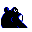

#062
Poliwrath
WaterFighting
An adept swimmer at both the front crawl and breast stroke. Easily overtakes the best human swimmers
Base stats Total 430
HP90
Attack85
Defense95
Speed70
Special90
Details
- Species
- Tadpole
- Height
- 4'03"
- Weight
- 119.0 lb
- Catch rate
- 45
- Base exp
- 185
- Growth
- Medium Slow
Level-up moves
LevelMoveType
StartHypnosisPsychic
StartWater GunWater
StartDoubleslapNormal
StartBody SlamNormal
Lv 9BubbleWater
Lv 18HazeIce
Lv 24MistIce
Lv 25BubblebeamWater
Lv 31SubmissionFighting
Lv 38Cross ChopFighting
Lv 44Hydro PumpWater
Lv 47Double-EdgeNormal
Evolution
Evolves from Poliwhirl
Where to find
TM / HM
TM01 Mega PunchTM05 Mega KickTM06 ToxicTM08 Body SlamTM09 Take DownTM10 Double-EdgeTM11 BubblebeamTM12 Water GunTM13 Ice BeamTM14 BlizzardTM15 Hyper BeamTM17 SubmissionTM18 CounterTM19 Seismic TossTM26 EarthquakeTM27 FissureTM28 DigTM29 PsychicTM31 MimicTM32 Double TeamTM34 BideTM35 MetronomeTM39 SwiftTM44 RestTM46 PsywaveTM48 Rock SlideTM50 SubstituteHM03 SurfHM04 Strength